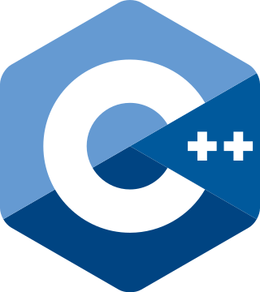
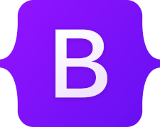
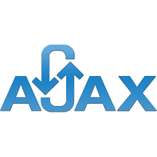

- Numer telefonu: 535-956-015
 Email: kamilapelc01@gmail.com
Email: kamilapelc01@gmail.com Data urodzenia: 12-02-1991
Data urodzenia: 12-02-1991 Miejsce zamieszkania: Warszawa
Miejsce zamieszkania: Warszawa
Umiejętności
 React.js
React.js JavaScript
JavaScript Unity
Unity- C++
- Bootstrap
- AJAX
 HTML
HTML CSS
CSS SASS
SASS GIT
GIT JavaScript DOM
JavaScript DOM jQuery
jQuery
Języki obce
- j. angielski - komunikatywny
O mnie
Programuje od roku. Zaczęłam od silnika Unity, po czym ukierunkowałam się na front-end.
Aktualnie rozwijam się i tworzę projekty z wykorzystaniem biblioteki React.js. W swoim portfolio mam projekty i aplikacje wykorzystujące technologie: HTML, CSS, JavaScript, JavaScript DOM, jQuery, AJAX, Bootstrap, SASS. Znam podstawy działania WordPress CMS.
Na bieżąco wykorzystuje system kontroli wersji GIT.
Miałam roczny urlop, który wykorzystałam na zdobywanie i poszerzanie umiejętności programistycznych.
Wykazuje się dużą kreatywnością i pomysłowością przy tworzeniu projektów.
Doświadczenie
- 03.2014 - 06.2022: Apteka Farm-Jed - technik farmaceutyczny realizacja recept, pomoc pacjentom, fakturowanie
- 11.2012 - 02.2014: Restauracja "Masz Gulasz" - kelnerka obsługa gościa oraz programów gastronomicznych
- 11.2011 - 09.2012: "Kolorowe.net" - obsługa strony internetowej obsługa systemu komputerowego IAI-Shop
Wykształcenie
- 2013 - 2019: Wyższa Szkoła Infrastruktury i Zarządzania w Warszawie - kosmetologia (spec. technologia kosmetyków)
- 2012 - 2010: Sudium Farmaceutyczne w Warszawie - technik farmaceutyczny
- 2010 - 2007: LO im. gen. Sowińskiego w Warszawie
Osiągnięcia
- Medalowy zawodnik woj. i międzynarodowych turniejów szachowych
Zainteresowania
 Żeglarstwo
Żeglarstwo- Szachy
- Tenis ziemny